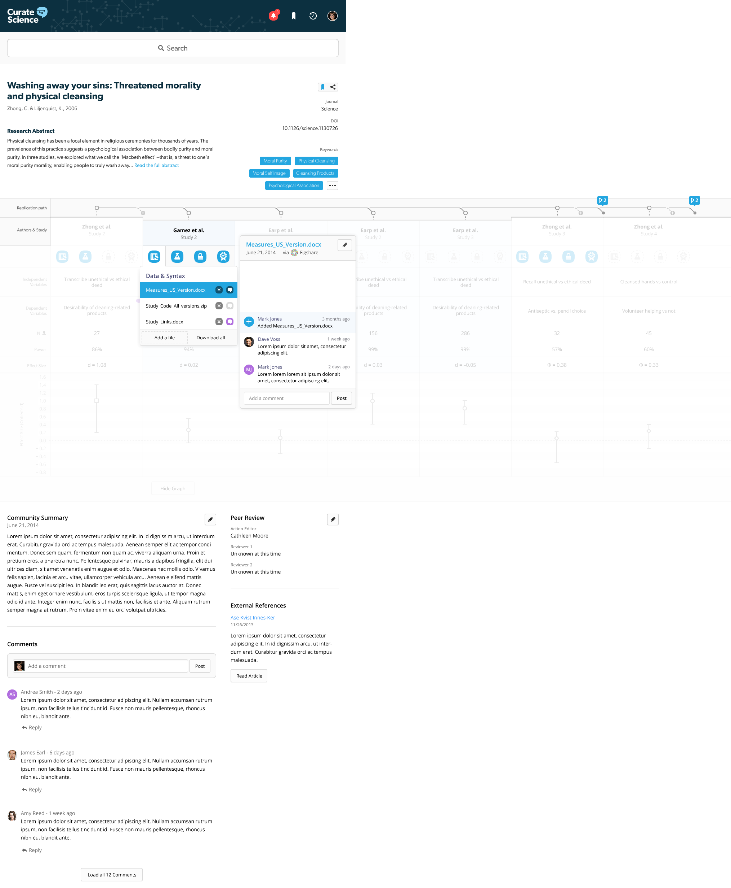

Crowd-sourcing the tracking and interpretation of replication evidence.
Published scientific findings can only be considered trustworthy -- for theory and applications (e.g., health interventions) -- once successfully replicated and generalized by independent researchers. No database, however, currently exists that systematically tracks and meta-analytically summarizes independent direct replications to gauge the replicability and generalizability of social science findings over time. Curate Science is a crowd-sourced effort to achieve just this to accelerate the development of trustworthy knowledge that can soundly inform theory and effective public policy to improve human welfare (see About section for more details).
Update (October 28, 2016): We've just released a new framework (version 3.0.1) for curating replication evidence of social science findings and are now soliciting feedback (please email us at curatescience@gmail.com). Details of our previous approaches can be found here (version 2.0.4) and here (version 1.0.5).
Curated List of Replications
- Reproducibility Project: Psychology [100 replications]

- Social Psych Special Issue [31 replications]
- Many Labs 1 [12 effects x 36 labs = 432 replications]
- Many Labs 2 [26 effects, N = ~15,000]

- Many Labs 3 [10 effects x 21 labs = 210 replications]
- RRR1 & RRR2: Verbal overshadowing [23 replications]
- RRR3: Grammar on intentionality [13 replications]
- RRR4: Ego depletion [23 replications]
- RRR5: Commitment on forgiveness [16 replications]
- RRR6: Facial feedback hypothesis [17 replications]
- RRR7: Intuitive-cooperation effect [20 replications]
- RRR8: Trivial pursuit effect [data being collected]
- Brain training [10 replications]
- Effects of violent video games [4 replications]
- Cognitive benefits of bilingualism [6 replications]
- Stereotype Threat [5 replications]
- Reducing prejudice via imagined contact [4 replications]
- Benefits of growth mindset [4 replications]
- Reading fiction boosts empathy [3 replications]
- Mozart effect [3 replications]
- Subliminal advertising [3 replications]
- Weather on happiness [3 replications]
- Single-exposure musical conditioning effect [6 replications]
- Pre-cognition [12 replications]
- Power posing [3 replications]
- Elderly priming [4 replications]
- Intelligence priming [8 replications]
- Money priming [42 replications]
- Cleanliness priming [7 replications]
- Achievement/goal priming [3 replications]
- Religious priming [4 replications]
- Color priming [8 replications]
- Honesty priming [3 replications]
- Heat priming [2 replications]
- Distance priming [5 replications]
- Mate priming [8 replications]
- US flag priming [36 replications]
- Macbeth effect [11 replications]
- Embodiment of weight [6 replications]
- Embodiment of secrets [5 replications]
- Embodiment of warmth
- Bargh & Shalev (2012) [14 replications]
- Williams & Bargh (2006) [3 replications]
- Vess (2012) [2 replications]
- Mood on helping [3 replications]
- Argument strength x NFC effect (ELM) [21 replications]
- Strength model of self-control [32 replications]
- Narcissist fragile self-esteem [9 replications]
- Unconscious self-esteem boosting [4 replications]
- Ovulation on voting [2 replications]
- Ovulation on mate preferences [3 replications]
- Ovulation on clothing choice [2 replications]
- Color on physical attraction [5 replications]
- Race-erased effect [2 replications]
- 1/f noise in racial bias [2 replications]
- Subliminal approach/avoidance effects [3 replications]
- Status legitimacy effect [3 replications]
- SES on unethical behaviors [9 replications]
- Unconscious decision-making [12 replications]
- Framing effects [36 replications]
- Anchoring effects [36 replications]
- Protection effect [3 replications]
- Incidental values on time judgments [8 replications]
Curated Evidence Collections
Social Priming / Embodiment
Cleanliness priming -- Replications (7) Tweet
Schnall, Benton, & Harvey (2008a)
With a Clean Conscience: Cleanliness Reduces the Severity of Moral Judgments
DOI:10.1111/j.1467-9280.2008.02227.x 
[Original Abtract ]
Theories of moral judgment have long emphasized reasoning and conscious thought while downplaying the role of intuitive and contextual influences. However, recent research has demonstrated that incidental feelings of disgust can influence moral judgments and make them more severe. This study involved two experiments demonstrating that the reverse effect can occur when the notion of physical purity is made salient, thus making moral judgments less severe. After having the cognitive concept of cleanliness activated (Experiment 1) or after physically cleansing themselves after experiencing disgust (Experiment 2), participants found certain moral actions to be less wrong than did participants who had not been exposed to a cleanliness manipulation. The findings support the idea that moral judgment can be driven by intuitive processes, rather than deliberate reasoning. One of those intuitions appears to be physical purity, because it has a strong connection to moral purity.| Original Studies & Replications | Data/Syntax | Materials/Pre-reg | N | Effect size (d) [95% CI] | ||
| Schnall et al. (2008a) Study 1 |  |
Study_1.sav | 40 | |||
|
Exp1_Data.sav |   |
OSF folder | 208 | ||
|
Online_Rep.sav |  |
OSF folder | 736 | ||
|
lee_data.csv | 90 | ||||
 Arbesfeld et al. (2014) Arbesfeld et al. (2014) |
60 | |||||
| Besman et al. (2013) |
60 | |||||
|
study1.sav | 189 | ||||
| Current meta-analytic estimate of replications of SBH's Study 1 (random-effects): | ||||||
| Schnall et al. (2008a) Study 2 | |
Study_2.sav | 43 | |||
|
Exp2_Data.sav | |
OSF folder | 126 | ||
| Current meta-analytic estimate of all replications (random-effects): |  |
|||||
| [Underlying data (CSV)] [R-code] | ||||||
Summary (Last updated: April 7, 2016): The main finding that cleanliness priming reduces the severity of moral judgments does not (yet) appear to be replicable (overall meta-analytic effect: r = -.08 [+/-.13]). In a follow-up commentary, Schnall argued that a ceiling effect in Johnson et al.'s (2014a) studies render their results uninterpretable and hence their replication results should be dismissed. However, independent re-analyses by Simonsohn, Yarkoni, Schönbrodt, Inbar, Fraley, and Simkovic appear to rule out such ceiling effect explanation, hence, Johnson et al.'s (2014a) results should be retained in gauging the replicability of the original cleanliness priming effect. Of course, it's possible "cleanliness priming" may be replicable under different operationalizations, conditions, and/or experimental designs (e.g., within-subjects). Indeed, Huang (2014) has reported new evidence suggesting cleanliness priming may only reduce severity of moral judgments under conditions of "low response effort", however, the research appears to be low-powered (<50%) to detect the small interaction effect found (r = .12). Regardless, independent corroboration of Huang's interaction effect is required before confidence is placed in such moderated cleanliness priming effect.
Original authors' and replicators' comments: F. Cheung mentioned a note should be added that data for the Besman et al. (2013) replication has been lost (communicated to him by K. Daubman, who has not yet responded to my request for links to original data of both her Arbesfeld et al. and Besman et al. replications). M. Frank mentioned we should consider including some of Huang's (2014) studies (baseline un-moderated conditions only), which led us to add Huang's Study 1 (only study with baseline condition comparable to Schnall et al.'s Study 1 design). S. Schnall has yet to respond (email sent March 11, 2016).
Related Commentary
- Brent Donnellan (May 21, 2014): Random Reflections on Ceiling Effects and Replication Studies
- Simone Schnall (May 23, 2014): An Experience with a Registered Replication Project (Comments section with heated exchanges)
- Carol Tweten (May 25, 2014): I'm disappointed: A graduate student's perspective
- Sanjay Srivastava (May 25, 2014): Does the replication debate have a diversity problem?
- Michael Frank (May 26, 2014): Another replication of Schnall, Benton, & Harvey (2008)
- Nicole Janz (May 25, 2014): "Replication bullying": Who replicates the replicators?
- Felix Schönbrodt (May 26, 2014): About replication bullies and scientific progress
- Etienne P. LeBel (May 26, 2014): Unsuccessful replications are beginnings not ends – Part I
- Michael Kraus (May 27, 2014): Notes on replication from an un-tenured social psychologist
- Simone Schnall (May 31, 2014): Further Thoughts on Replications, Ceiling Effects and Bullying
- Commentary related to ceiling effect re-analyses
- Uri Simonsohn (June 4, 2014): Ceiling effects and replications
- Tal Yarkoni (June 1, 2014): There is no ceiling effect in Johnson, Cheung, & Donnellan (2014)
- Felix Schönbrodt (June 2, 2014): Reanalyzing the Schnall/Johnson “cleanliness” data sets: New insights from Bayesian and robust approaches
- R. Chris Fraley (May 24, 2014): Additional Reflections on Ceiling Effects in Recent Replication Research
- Yoel Inbar (May 31, 2014): Ceiling effects?
- Matus Simkovic (June 25, 2014): Guess what? Another Analysis of the Schnall-Johnson Data
Money priming -- Replications (42) Tweet
Vohs, Mead, & Goode (2006) 
The psychological consequences of money
Caruso, Vohs, Baxter, & Waytz (2013) 
Mere exposure to money increases endorsement of free-market systems and social inequality


Summary (Last updated: March 24, 2016): The claim that incidental exposure to money influences social behavior and beliefs does not (yet) appear to be replicable (overall meta-analytic effect: d = -.01 [+/-.05]). This appears to be the case whether money exposure is manipulated via instruction background images (Caruso et al., 2013, Study 1 & 4) or descrambling sentence task (Vohs et al., 2006, Study 3) and whether outcome variable is helping others (Vohs et al., 2006, Study 3), system justification beliefs (Caruso et al., 2013, Study 1), just world beliefs (Caruso et al., 2013, Study 2), social dominance beliefs (Caruso et al., 2013, Study 3), or fair market beliefs (Caruso et al., 2013, Study 4). Of course, it's possible money exposure reliably influences behavior under other (currently unknown) conditions, via other operationalizations, and/or using other experimental designs (e.g., within-subjects).
Original authors' comments: K. Vohs responded and mentioned Schuler & Wänke's (in press) replication of Caruso et al. (2013) was missing; this lead us to add Schuler & Wänke (in press) Study 2 (main effect) as a direct replication of Caruso et al. (2013) Study 2. Vohs pointed out several design differences between Grenier et al. (2012) and Vohs et al.'s (2006) original Study 3, but these deviations are minor (e.g., different priming stimuli, different help target); given Grenier et al. (2012) used the same general methodology as Vohs et al. (2006) Study 3 for the independent variable (unscrambling priming task) and dependent variable (offering help to code data sheets), the study satisfies eligibility criteria for a sufficiently similar direct replication according to Curate Science's taxonomy and hence was retained. Vohs also pointed out design differences between Tate (2009) and Vohs et al. (2006) Study 3; given Tate (2009) employed a different general methodology for the IV (background image on a poster instead of unscrambling task), the study does *not* satisfy eligibility criteria for a direct replication and hence was excluded. Finally, Vohs mentioned that "replication studies" for Vohs et al. (2006) are reported in Vohs (2015), however none of these studies were sufficiently similar methodologically to meet direct replication eligibility criteria and hence were not added.
Related Commentary
- Joe Pinsker (October 30, 2014): Just Looking at Cash Makes People Selfish and Less Social
- Neuroskeptic (July, 2015): Social Priming: Money for Nothing?
Macbeth effect -- Replications (11) Tweet
Zhong & Liljenquist (2006)
Washing away your sins: Threatened morality and physical cleansing
DOI:10.1126/science.1130726 
[Original Abtract ]
Physical cleansing has been a focal element in religious ceremonies for thousands of years. The prevalence of this practice suggests a psychological association between bodily purity and moral purity. In three studies, we explored what we call the "Macbeth effect", that is, a threat to one's moral purity induces the need to cleanse oneself. This effect revealed itself through an increased mental accessibility of cleansing-related concepts, a greater desire for cleansing products, and a greater likelihood of taking antiseptic wipes. Furthermore, we showed that physical cleansing alleviates the upsetting consequences of unethical behavior and reduces threats to one's moral self-image. Daily hygiene routines such as washing hands, as simple and benign as they might seem, can deliver a powerful antidote to threatened morality, enabling people to truly wash away their sins.| Original Studies & Replications | Data/Syntax | Materials/Pre-reg | N | Effect size (r) [95% CI] | ||
| Zhong & Liljenquist (2006) Study 2 | 27 |  |
||||
| 36 |  |
|||||
|
Study-1.csv | 153 |  |
|||
|
Study-2-USA.csv | 156 |  |
|||
|
Study-3-India.csv | 286 |  |
|||
| 335 |  |
|||||
|
Spring08protocol.pdf | 148 |  |
|||
| Current meta-analytic estimate of replications of Z&L's Study 2 (random-effects): |  |
|||||
 |
||||||
| Zhong & Liljenquist (2006) Study 3 | 32 |  |
||||
| 45 |  |
|||||
|
Study-1.sav | 210 |  |
|||
| Current meta-analytic estimate of replications of Z&L's Study 3 (random-effects): |  |
|||||
 |
||||||
| Zhong & Liljenquist (2006) Study 4 | 45 |  |
||||
| 28 |  |
|||||
| 115 |  |
|||||
|
washing-sins.sav | 29 |  |
|||
| Current meta-analytic estimate of replications of Z&L's Study 4 (random-effects): |  |
|||||
 |
||||||
| Current meta-analytic estimate of all replications (random-effects): |  |
|||||
| [Underlying data (CSV)] [R-code] | ||||||
Summary (Last updated: March 16, 2016): The main finding that a threat to one's moral purity induces the need to cleanse oneself (the "Macbeth effect") does not (yet) appear to be replicable (overall meta-analytic effect: r = -.02 [+/-.05]). This appears to be the case whether moral purity threat is manipulated via recalling unethical vs. ethical deed (Studies 3 and 4) or transcribing text describing unethical vs. ethical act (Study 2) and whether need to cleanse onself is measured via desirability of cleansing products (Study 2), product choice (Study 3), or reduced volunteerism after cleansing (Study 4). Of course, it is possible the "Macbeth effect" is replicable under different operationalizations and/or experimental designs (e.g., within-subjects).
Original authors' comments: We shared a draft of the curated set of replications with both original authors, and invited them to provide feedback. Chenbo Zhong replied thanking us for the notice and mentioned two published articles that should potentially be considered (i.e., Denke et al., 2014; Reuven et al., 2013). Reuven et al. do indeed report a sufficiently close replication (in their non-OCD control group) of Zhong & Liljenquist's Study 4 and hence the control group replication was added (though we're currently clarifying an issue with their reported t-value).
Related Commentary
- Christian Jarret (November 18, 2013): Not so easy to spot: A failure to replicate the Macbeth Effect across three continents
- David Berreby (March 2011): Three Cheers for Failure!
Embodiment of physical warmth -- Replications (14) Tweet
Bargh & Shalev (2012)
The Substitutability of Physical and Social Warmth in Daily Life
DOI:10.1037/a0023527 
[Original Abtract ]
Classic and contemporary research on person perception has demonstrated the paramount importance of interpersonal warmth. Recent research on embodied cognition has shown these feelings of social warmth or coldness can be induced by experiences of physical warmth or coldness, and vice versa. Here we show that people tend to self-regulate their feelings of social warmth through applications of physical warmth, apparently without explicit awareness of doing so. In Study 1, higher scores on a measure of chronic loneliness (social coldness) were associated with an increased tendency to take warm baths or showers. In Study 2, a physical coldness manipulation significantly increased feelings of loneliness. In Study 3, needs for social affiliation and for emotion regulation, triggered by recall of a past rejection experience, were subsequently eliminated by an interpolated physical warmth experience. Study 4 provided evidence that people are not explicitly aware of the relation between physical and social warmth (coldness), as they do not consider a target person who often bathes to be any lonelier than one who does not, all else being equal. Together, these findings suggest that physical and social warmth are to some extent substitutable in daily life and that this substitution reflects an unconscious self-regulatory mechanism.


Summary (Last updated: April 7, 2016): The notion that physical warmth influences psychological social warmth does not appear to be well-supported by the independent replication evidence (overall meta-analytic effect: r = .007 [+/-.035])), at least via Bargh and Shalev's (2012) Study 1 and 2 operational tests (Study 1: trait loneliness is positively associated with warmer bathing; Study 2: briefly holding a frozen cold-pack boosts reported feelings of chronic loneliness). Regarding first operational test, the loneliness-shower effect doesn't appear replicable whether (1) trait loneliness is measured using the complete 20-item UCLA Loneliness Scale (Donnellan et al., 2015 Studies 1-4) or a 10-item modified version of the UCLA Loneliness Scale (Donnellan et al., 2015 Studies 5-9, as in Bargh & Shalev, 2012 Studies 1a and 1b), (2) whether warm bathing is measured via a "physical warmth index" (all replications as in Bargh & Shalev, 2012 Study 1a and 1b) or via the arguably more hypothesis-relevant water temperature item (all replications of Bargh & Shalev Study 1), and (3) whether participants were sampled from Michigan (Donnellan et al., 2015 Studies 1-9), Texas (Ferrell et al., 2013), or Israel (McDonald & Donnellan, 2015). Of course, different operationalizations of the idea may yield replicable evidence, e.g., in different domains, contexts, or using other experimental designs (e.g., within-subjects). In a response, Shalev & Bargh (2015) point out design differences in Donnellan et al.'s (2015) replications that could have led to discrepant results (e.g., participant awareness not probed) and report three additional studies yielding small positive correlations between loneliness and new bathing and showering items (measured separately; r = .09 [+/-.09, N=491] and r = .14 [+/-.08, N=552]). These new findings, however, await independent corroboration (these additional studies not included in meta-analysis because they were executed by non-independent researchers, see FAQ for more details). In a rejoinder, Donnellan et al. (2015b) report an additional study that (1) probed participant awareness and found effect size unaltered by excluding participants suspected of study awareness (r=-.04, N=291 vs. r=-.05, N=323 total sample) and (2) found no evidence that individual differences in attachment style moderated the loneliness-showering link.
Original authors' comments: I. Shalev responsed stating that they've already publicly responded to these replications and have reported three additional studies in their response and that readers be referred to this article (Shalev & Bargh, 2015). B. Donnellan responded stating that several open questions remain including (1) unexplained anomalies in Bargh & Shalev's (2012) Study 1a data (i.e., 46 of the 51 participants (90%) reported taking less than one shower or bath per week) and (2) concerns regarding unclear exclusion criteria for Shalev & Bargh's (2015) new studies. Donnellan further stated that he's unconvinced by Shalev & Bargh's reply and that replication attempts by multiple independent labs would be the most constructive step forward.
Related Commentary
- Christian Jarrett (June 20, 2011): Feeling lonely? Have a bath
- Unknown (July 2, 2011): Hot Baths May Cure Loneliness
- Unknown (July 5, 2011): Wash the loneliness away with a long, hot bath
- Elizabeth Angell (July 11, 2011): What a Long, Hot Shower Says About You
- Ian Birch: Important study has implications for treatment of social anxiety
- Unknown (June 23, 2011): Having a hot bath dispels loneliness
- Unknown (June 24, 2011): How soaking in a warm bath can stop you feeling lonely
- Brent Donnellan (September 20, 2012): What’s the First Rule about John Bargh’s Data?
- Sian Beilock (January 25, 2012): Feeling Lonely? Take a Warm Bath
- Brent Donnellan (January 24, 2014): Warm Water and Loneliness
- Brent Donnellan (May 1, 2014): Warm Water and Loneliness Again?!?!
- Brent Donnellan (November 19, 2014): (Hopefully) The Last Thing We Write About Warm Water and Loneliness
Self
Strength model of self-control -- Replications (32) Tweet
Muraven, Tice, & Baumeister (1998) 
Self-control as limited resource: Regulatory depletion patterns
Baumeister, Bratslavsky, Muraven, & Tice (1998) 
Ego depletion: Is the active self a limited resource?


Summary (Last updated: November 4, 2016): There appears to be replication difficulties across 6 different operationalizations of original studies supporting the two main predictions of the strength model of self-control (Baumeister et al., 2007). Prediction 1: Independent researchers appear unable to replicate the finding that glucose consumption counteracts ego depletion, whether self-control is measured via Stroop (Cesario & Corker, 2010, as in Gaillot et al., 2007, Study 7) or future-discounting task (Lange & Eggert, 2014, Study 1, as in Wang & Dvorak, 2010). Prediction 2: There also appears to be replication difficulties (across 4 distinct operationalizations) for the basic ego depletion effect. This is the case whether IV manipulated via thought supppression, video attention task, emotion suppression during video watching, or effortful letter crossing task and also whether DV measured via anagram performance, standardized tests, working memory, or multi-source interference task. Wang et al. (2014) do appear to successfully replicate Inzlicht & Gutsell's (2007) finding that ego depletion led to reduced activity in the anterior cingulate (region previously associated with conflict monitoring), however this finding should be interpretd with caution given potential bias due to analytic flexibility in data exclusions and EEG analyses. Of course, ego depletion may reflect a replicable phenomenon under different conditions, contexts, and/or operationalizations; however, the replication difficulties across 6 different operationalizations suggest ego depletion might be much more nuanced than previously thought. Indeed, alternative models have recently been proposed (e.g., motivation/attention-based accounts, Inzlicht et al., 2014; mental fatigue, Inzlicht & Berkman, 2015) and novel intra-individual paradigms to measure ego depletion have also emerged (Francis, 2014; Francis et al., 2015) that offer promising avenues for future research.
Original authors' and replicators' comments: B. Schmeichel pointed out a missing replication (Healy et al., 2011, Study 1) of Schmeichel (2007, Study 1); we've added the study, though are currently clarifying with K. Healey a potential issue with their reported effect size. F. Lange mentioned that effect sizes for the RRR ego depletion replications seemed off (also pointed out by B. Schmeichel); indeed, we inadvertently sourced the effect sizes from an RRR dataset that included all exclusions (these have now been corrected and match values reported in Figure 1 of Sripada et al. RRR article). M. Inzlicht responded that he's currently developing a pre-registered study of the basic ego depletion effect using a much longer initial depletion task and adapted to be effortful for everyone via a more powerful pre-post mixed-design. R. Dvorak stated their study was not a replication of ego depletion; we clarified that the Wang & Dvorak (2010) study is used as an original study whose finding is consistent with the glucose claim of Baumeister et al.'s (2007) strength model. J. Lurquin mentioned their effect size was d=0.22 (not d=0.21), but .21 is actually correct given we use Hedge's g bias correction, but still call it d because of its greater familiarity with researchers.
Related Commentary
- Michael Inzlicht (April 4, 2016): Updating beliefs
- Christopher J. Ferguson (March 29, 2016): The Reduction of Ego-Depletion
- Brian Resnick (March 25, 2016): What psychology’s crisis means for the future of science
- Michael Inzlicht (March 25, 2016): The Replication Crisis Is My Crisis
- Steven M. Ledbetter & Omar Ganai (March 17, 2016): We've all been wrong about willpower. And that's OK.
- Daniel Engber (March 6, 2016): Everything Is Crumbling: An influential psychological theory, borne out in hundreds of experiments, may have just been debunked. How can so many scientists have been so wrong?
- Melissa Dahl (March 4, 2016): If You Believe Your Willpower Is Limitless, It Is: Psychology's favorite theory about willpower may be totally wrong
- Sam Mcnerney (April, 2013): Ego Depletion, Motivation and Attention: A New Model of Self-Control
- Reponses to Ego Depletion RRR:
- Roy Baumeister & Kathleen Vohs (March 17, 2016): Misguided Effort with Elusive Implications
- C. Sripada, D. Kessler, & J. Jonides (March, 2016): Sifting Signal From Noise With Replication Science
- Martin S. Hagger (March, 2016): Rumours of the Demise of Ego-Depletion are (Somewhat) Exaggerated
Classic Social Psychology
Mood on helping -- Replications (3) Tweet
Isen & Levin (1972) 
Effect of feeling good on helping: Cookies and kindness
Levin & Isen (1975) 
Further studies on the effect of feeling good on helping
| Original Studies & Replications | Data/Syntax | Materials/Pre-reg | N | Effect size (Risk Difference) [95% CI] | ||
| Isen & Levin (1972) Study 2 | 41 |  |
||||
| 50 |  |
|||||
 |
||||||
| Levin & Isen (1975) Study 1 | 24 |  |
||||
| 32 |  |
|||||
| 106 |  |
|||||
| Current meta-analytic estimate of L&I Study 1 replications (random-effects): |  |
|||||
 |
||||||
| Current meta-analytic estimate of all replications (random-effects): |  |
|||||
| [Underlying data & R-code] | ||||||
Summary (Last updated: March 24, 2016): The finding that positive mood boosts helping appears to have replicability problems. Across three replications, individuals presumably in a positive mood (induced via finding a dime in a telephone booth) helped at about the same rate (29.6%) as those not finding a dime (29.8%; meta-analytic risk difference estimate = .03 [+/-.19]; in original studies, 88.8% of dime-finding Ps helped compared to 13.9% of Ps in the control condition). This was the case whether helping was measured via picking up dropped papers (Blevins & Murphy, 1974 as in Isen & Levin, 1972, Study 2) or via mailing a "forgotten letter" (Weyant & Clark, 1977 Study 1 & 2 as in Levin & Isen, 1975, Study 1). These negative replication results are insufficient to declare the mood-helping link as unreplicable, however, they do warrant concern that perhaps additional unmodeled factors should be considered. For instance, it seems plausible that mood may influence helping in different ways for different individuals (e.g., negative, rather than positive, mood may boost helping in some individuals), and may also influence the same person differently on different occasions. Using highly-repeated within-person (HRWP) designs (e.g., Whitsett & Shoda, 2014) would be a fruitful avenue to empirically investigate these more plausible links between mood and helping behavior.
Original authors' comments: Report your research and results thoroughly, you may no longer be around when future researchers interpret replication results of your work!
Registered Replication Reports (RRR) @PoPS
Verbal overshadowing (RRR1 & RRR2  ) -- Replications (23) Tweet
) -- Replications (23) Tweet
Schooler & Engstler-Schooler (1990)
Verbal overshadowing of visual memories: Some things are better left unsaid
DOI:10.1016/0010-0285(90)90003-M 
[Original Abtract ]
It is widely believed that verbal processing generally improves memory performance. However, in a series of six experiments, verbalizing the appearance of previously seen visual stimuli impaired subsequent recognition performance. In Experiment 1, subjects viewed a videotape including a salient individual. Later, some subjects described the individual's face. Subjects who verbalized the face performed less well on a subsequent recognition test than control subjects who did not engage in memory verbalization. The results of Experiment 2 replicated those of Experiment 1 and further clarified the effect of memory verbalization by demonstrating that visualization does not impair face recognition. In Experiments 3 and 4 we explored the hypothesis that memory verbalization impairs memory for stimuli that are difficult to put into words. In Experiment 3 memory impairment followed the verbalization of a different visual stimulus: color. In Experiment 4 marginal memory improvement followed the verbalization of a verbal stimulus: a brief spoken statement. In Experiments 5 and 6 the source of verbally induced memory impairment was explored. The results of Experiment 5 suggested that the impairment does not reflect a temporary verbal set, but rather indicates relatively long-lasting memory interference. Finally, Experiment 6 demonstrated that limiting subjects' time to make recognition decisions alleviates the impairment, suggesting that memory verbalization overshadows but does not eradicate the original visual memory. This collection of results is consistent with a recoding interference hypothesis: verbalizing a visual memory may produce a verbally biased memory representation that can interfere with the application of the original visual memory.


Summary (Last updated: March 3, 2016): The verbal overshadowing effect appears to be replicable; verbally describing a robber after a 20-minute delay decreased correct identification rate in a lineup by 16% (from 54% [control] to 38% [verbal]; meta-analytic estimate = -16% [+/-.04], equivalent to r = .17). Still in question, however, is the validity and generalizability of the effect, hence it's still premature for public policy to be informed by verbal overshadowing evidence. Validity-wise, it's unclear whether verbal overshadowing is driven by a more conservative judgmental response bias process or driven by a reduced memory discriminability process because no "suspect-absent" lineups were used. This is important to clarify because it directly influences how eye-witness testimony should be treated (e.g., if verbal overshadowing is primarily driven by a more conservative response bias process, identifications made after a verbal descriptions should actually be given *more* [rather than less] weight, see Mickes & Wixted, 2015). Generalizability-wise, in a slight variant of RRR2 (i.e., RRR1), a much smaller overall verbal deficit of -4% [+/-.03] emerged, when the lineup identification occured 20 minutes after verbal description (which occurred immediately after seeing robbery). Future research needs to determine the size of verbal overshadowing when there's a delay between crime and verbal description and before lineup identification, which better reflect real-world conditions.
Original authors' comments: We shared a draft of the curated set of replications with original authors, and invited them to provide feedback. Jonathan Schooler replied stating that the information seemed fine to him.
Related Commentary
- Rolf Zwaan (September 18, 2014): Verbal overshadowing: What can we learn from the First APS Registered Replication Report?
- Mickes & Wixted (2015) follow-up article: On the applied implications of the verbal overshadowing effect
About - Conceptual Framework
(For full details of our replication evidence curation framework, please see here.)
Every year, society spends billions of dollars (primarily of public tax payer money) to fund scientific studies aimed at deepening our understanding of the natural and social world. The hope is that the findings yielded by these studies will help us address important societal problems (e.g., cancer; suicide; racial discrimination; voter turnout). The findings yielded by these studies, however, can only be considered sufficiently trustworthy knowledge ready to inform public-policy decisions once they have been successfully replicated and generalized by independent researchers. Successful replication is taken to mean that independent researchers have been able to consistently observe similar results as originally reported using similar methodology and conditions to an original study. Successful generalization is taken to mean that independent researchers have been able to consistently observe similar results as originally reported under situations that use different methodologies (often superior methodologies or measurement instruments), contexts, and populations, consequently producing evidence that original results generalize to these different situations.
Current approaches (i.e., traditional meta-analyses ) to synthesizing evidence are unable to produce the trustworthy knowledge we seek because these cannot fully account for publication bias (Ferguson & Heene, 2012; McShane, Bockenholt, & Hansen, 2016; Rosenthal, 1979), questionable research practices (John et al., 2012), and unintentional exploitation of design and analytic flexibility (Simmons et al., 2011; Gelman & Loken, 2013) and the various unknowable interactions among these factors.
To achieve our goal of creating trustworthy knowledge then, we need to systematically track the replicability and generalizability of social science findings over time. Curate Science is a general and unified framework for the tracking and curation of replicability and generalizability evidence of social science findings, with the goal of producing a dynamic, living, and continuously evolving body of knowledge that can soundly inform public-policy. The general framework needs to be very flexible to overcome several distinct conceptual, epistemological, and statistical challenges that arise when tracking and gauging replicability and generalizability. Each of the following challenges needs to be overcome to achieve our goal:
- Accommodation of different approaches to replication: The current focus in economics and political science is on analytic reproducibility and robustness analyses whereas current focus in psychology is on new sample replications. Each of these approaches is important and the order in which these approaches is implemented is crucial to maximize research efficiency. Findings that are not analytically reproducible and/or analytically robust may not be worth the costly expenses required to attempt to replicate in a new sample. Also, for maximal knowledge creation, it is crucial to have inter-disciplinary curation of replication evidence rather than having economists, political scientists, and psychologists maintain their own replication databases (as is currently the case).
- Accumulation of replication evidence that speaks to the replicability and generalizability of an effect/hypothesis (i.e., Replicability replication evidence vs. Generalizability replication evidence). To achieve this, we need flexible ontological structures – what we’re calling evidence collections – to accommodate replication studies of specific effects/hypotheses being nested in different ways in relation to original studies that test an effect across different generalizations and/or operationalizations of the target constructs (e.g., replications of an effect via a single vs. multiple generalization(s)/operationalization(s) originating from a single published article; replications of an effect via multiple generalizations and/or operationalizations originating from several different published articles).
- Accommodation of different kinds of studies (e.g., experimental studies [RCTs], observational and correlational studies) and study designs (e.g., between-subjects designs, within-subject designs, interaction designs, etc.).
- Development of a working replication taxonomy to allow a principled and justifiable approach to distinguishing replications that are sufficiently methodologically similar to an original study vs. insufficiently methodologically similar. Such a taxonomy also guides what kind of original studies are eligible to be included in evidence collections as separate generalization branches under which direct replication studies are curated (see below for details).
- Taking into account study quality of replications and ability to pool across different subsets of replications that vary on the following study quality dimensions: (1) verifiability (e.g., open data/materials availability), (2) pre-registration status, (3) analytic reproducibility verification status, (4) analytic robustness verification status, (5) active sample evidence (also known as positive controls), and (6) replication design differences.
- Development of a principled approach to meta-analytically combining replication evidence within and across generalizations of an empirical effect and interpreting the overall meta-analytic results (e.g., fixed-effect vs. random-effects model, possibly hierarchical in the case of multiple generalizations and correlated outcomes; Bayesian approaches to yield more principled and meaningful credible intervals; small telescope approach in the case of very few replication studies).
- Creation of a viable crowd-sourcing system that includes key features to (i) incentivize number and frequency of contributions (low-barrier-to-entry approach, user contributions prominently displayed on public user profile and home page) and (ii) ensure quality-control (e.g., light-touch editorial review whereby posted information appears as "unverified" until an editor reviews and approves it).
Ironing out these conceptual, epistemological, and statistical issues is a pre-requisite for setting out to build an actual web interface that researchers can use to track and gauge replicability and generalizability to ultimately produce a living and dynamically evolving body of knowledge that can soundly inform public-policy. The framework is developed with an initial focus on social science findings that have applied implications given that such findings have a lot more potential in influencing society (e.g., font disfluency boosts math performance effect; stereotype threat; "wise" interventions on voting; Mozart effect). That said, the framework will also be able to handle basic social science findings that may not necessarily have direct societal implications.
Our proposed conceptual framework also needs some kind of workable replication taxonomy to allow a principled and justifiable approach to distinguishing replications that are sufficiently methodologically similar to an original study from replications that are insufficiently similar. Contrary to some current views in the field of psychology, replications actually lie on an ordered continuum of methodological similarity relative to an original study, with exact and conceptual replications occupying the extremes. A direct replication repeats a study using methods as similar as is reasonably possible to the original study, whereas a conceptual replication repeats a study using different general methodology and tests whether a finding generalizes to different manipulations, measurements, domains, and/or contexts (Asendorpf et al., 2013; Brandt et al., 2014; Lykken, 1968; Simons, 2014). To guide the classification of replications based on methodological similarity to an original study, we use the replication taxonomy depicted below, which is a simplification of Schmidt’s (2009) replication classification scheme, itself a simplification of an earlier taxonomy proposed by Hendrick (1991).

As can be seen, different types of increasingly methodologically dissimilar replications exist between these two poles, each of which serve different purposes. In an “Exact” replication (1st column), every controllable methodological facet would be the same except for contextual variables, which is only typically possible for the original lab and hence is of limited utility for our purposes here. “Very Close” replications (2nd column) employ the same IV and DV operationalizations and IV and DV stimuli as an original study, but can be different in terms of procedural details, physical setting, and contextual variables (with any required linguistic and/or cultural adaptions of the IV or DV stimuli considered as part of “Contextual variables"). “Close” replications (3rd column) employ the same IV and DV operationalizations, but can employ different sets of IV or DV stimuli (or different scale items or a shorter version of a scale) and different procedural details and contextual factors. “Far” replications (4th column) involve different operationalizations for the IV or DV constructs whereas for “Very Far” replications (5th column) everything can be different including different constructs altogether (via different operationalizations) in different domains of inquiry (as in Bargh, Chen, & Burrows’, 1996 Study 1, 2, and 3). Hence, “Exact”, “Very Close”, and “Close” replications reflect increasingly methodologically dissimilar types of direct replications that provide sufficient levels of falsifiability to (1) test and confirm the reliability (i.e., basic existence) of a phenomenon and (2) systematically test relevant contextual factors and other auxiliary assumptions, which contribute to validity and generalizability (Srivastava, 2014; Meehl, 1967, 1978). On the other hand, “Far” and “Very Far” replications reflect conceptual replications that can only speak to validity and generalizability, given the major design differences intentionally introduced.
To achieve our goal, only the three types of direct replications (“Exact”, “Very Close”, and “Close”) are eligible for inclusion in evidence collections. We need such a demarcation because sufficiently methodologically similar replications naturally constrain design and analytic flexibility (old-school “poor person’s pre-registration”) and so ensures sufficient levels of falsifiability to refute an original claim, assuming auxiliary assumptions are met (Earp & Trafimow, 2015; Meehl, 1967, 1978). If a follow-up study is different on every methodological facet, then it can never refute an original claim because unsupportive evidence can always be attributed to one of the intentionally introduced design differences rather than to the falsity of the original hypothesis (Hendrick, 1991; LeBel & Peters, 2011; see also Feynman, 1974). Without such constraints, a popular field where numerous researchers are testing the same (false) hypothesis will inevitably produce false positives with enough determination given that typically an infinite number of analytic and design specifications (across different operationalizations) exist to test a specific effect/phenomenon (Ioannidis, 2005; 2012). The historical case of cold fusion provides a compelling example of this. As recounted by Pashler and Harris (2012, p. 534), only follow-up studies using very different methodology yielded a trickle of positive results observing a cold fusion effect whereas more methodologically similar replications yielded overwhelmingly negative results (Taubes & Bond, 1993).
Core Features
Note: These features are from an older version (2.0.4) of Curate Science. We will soon be releasing revamped UI designs and features based on a new curation framework (version 3.0.1).
Lightning-fast Search with Auto-complete
Our homepage will feature a lightning-fast search with auto-complete so that you can quickly find what you're looking for. To browse, you can select from the Most Curated or Recently Updated articles lists.
Innovative Search Results Page
Easily find relevant articles via icons that indicate availability of data/syntax, materials, replication studies, reproducibility info, and pre-registration info. Looking for articles that have specific components available? Use custom filters to only display those articles (e.g., only display articles with available data/syntax)!
Article Page: Putting it all Together
Our flagship feature is the consolidation and curation of key information about published articles, which all come together on the article page. The page will feature automatically updating meta-analytic effect size forest plots, in-browser R analyses to verify to reproducibility of results, editable fields to add, modify, or update study information, and element-specific in-line commenting.
User Profile Dashboard Page
The user dashboard will display a user's recent contributions, a list of their own articles, reading and analyses history, recent activities by other users, and notifications customization.


{kind=link}
{kind=link}
{kind=link}
{kind=link}
{kind=link}
{kind=link}